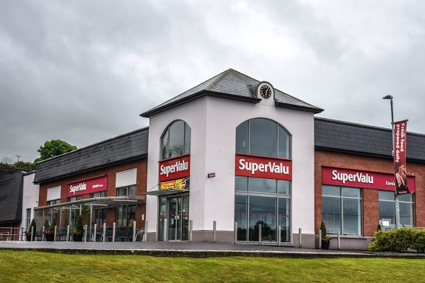

Work Experience

Company: Supervalu
Job Title: Butcher assistant
Year: 2014-2015
Job description: My tasks involved serving customers who came to the butcher counter to order fresh meet. I also assisted the head butcher in preparing food, this involved cutting steak, marinating fresh meet with sauces and preparing dishes such as stir-fries. At the end of each working day I was required to clean down and disinfect all the equipment used, this was carefully completed to ensure the meet counter complied with acceptable hygine standards and also for health and saftey purposes.

Company: T&A Plant Hire Ltd.
Job Title: Labourer
Year: 2015-Present
Job description: Worked as a labourer on building sites. Tasks involved assisting a varity of skilled workers such as machine drivers, carpenters and brick layers. I was also required sweep out and clean houses that were under construction to allow work to be carried out in a safe and suitable environment. I am currently still working for this employeer, as I was the companies vehicles as a part time job. I will return as a Labourer over the summer months.
Company: Ballynoe Bounce Around
Job Title: Entertainment rep
Year: 2012-2017
Job description: As my two sibilings and I ran this company, we were required to perform a number of challenging tasks. We had to market our business by handing out leaflets and flyers revealing to potential customers what services our company offered, such as letting people know of the bouncy castles and marquees we had for hire. We had to take bookings from clients, ensuring no mistakes were made as an incident such as a double booking would likely cause serious problems. We had to deliever and assemle the products, before returning to collect them after the clients events were over. This aspect along with taking bookings forced us to deal with the public in a polite and respectful manner as the comapny's good name along with our own was at stake. We also had to be careful in handling money, we were required to ensure all payments were recieved in full and that the money was carefully lodged to banks once recieved. The company discontinued in 2017 as my sibilings and I have decided to persure different careers and are all currently attending Third Level Education.
Back Home